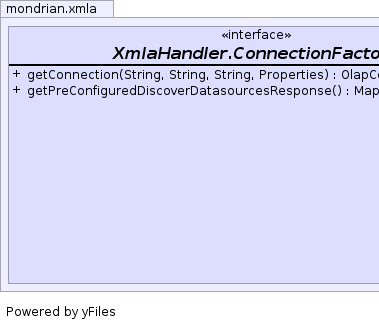
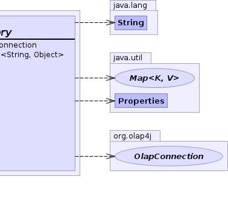

public static interface XmlaHandler.ConnectionFactory
A typical implementation will probably just use a
DataSource or a connect string, but it is important
that the connection is assigned to the correct catalog, schema and role
consistent with the client's XMLA context.
|  |  |
| Modifier and Type | Method and Description |
|---|---|
OlapConnection |
getConnection(String catalog,
String schema,
String roleName,
Properties props)
Creates a connection.
|
Map<String,Object> |
getPreConfiguredDiscoverDatasourcesResponse()
Returns a map of property name-value pairs with which to populate
the response to the DISCOVER_DATASOURCES request.
|
OlapConnection getConnection(String catalog, String schema, String roleName, Properties props) throws SQLException
The implementation passes the properties to the underlying driver.
SQLException - on errorcatalog - The name of the catalog to use.schema - The name of the schema to use.roleName - The name of the role to use, or NULL.props - Properties to be passed to the underlying native driver.Map<String,Object> getPreConfiguredDiscoverDatasourcesResponse()
Properties correspond to the columns of that request: ""DataSourceName", et cetera.
Returns null if there is no pre-configured response; in which case, the driver will have to connect to get a response.